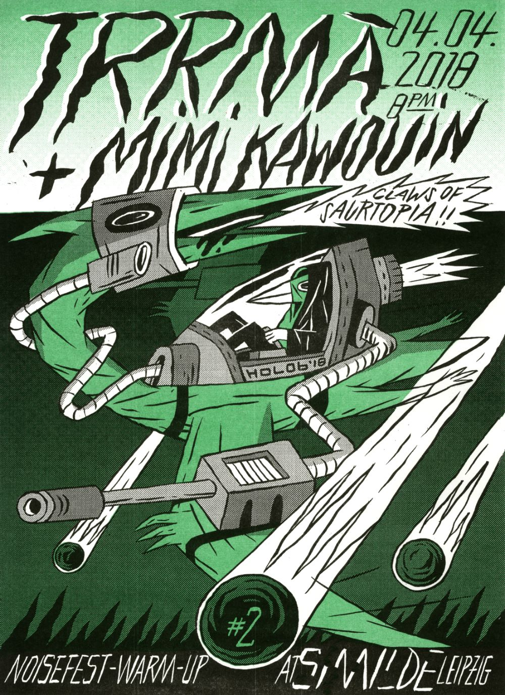

Claws of Saurtopia Noise Fest Warm-Up #2

As promised, here’s another warm-up show for Claws of Saurtopia Noise Fest 2018:
Wednesday, 4th April 2018
TRRMÀ (it)
Trrmà is a project of Giovanni Todisco (Percussion) and Giuseppe Candiano (Synth).
The music mix “classic” afrikaans and symphonic percussion with modular synthesis. Tribal polyrithm’s percussion
remind archaic and ancient primitive
dance combined to scifi and distopic feelings caming out from
synthetizers, and then sounds draws inspiration from electroacoustic
music, abstract electronics, grindcore, Japanese noise,mediterranean and
symphonic music. The way of composition is based on a
simplification of some Iannis Xenakis schemes, creating more immediate
and imaginative soundscapes
Influences: Xenakis, Sun Ra, Curtis Roads, Russell Haswell, Crash Worship,
Masonna
https://soundcloud.com/trrma-573724885/trrma-impro-2
https://soundcloud.com/trrma-573724885/trrma-impro1
https://www.youtube.com/watch?v=9dhi6iUALw0
https://www.youtube.com/watch?v=o68E8J8U4uE
MIMI KAWOUIN
(f)
Hypnotic Messy Mixture
Electromagnetic Waves Eating Feedback
Minimal Brutal
Noise
Light Ryhtmic Screams
Drowning Chaotic Live
https://www.youtube.com/watch?v=7LRnOe-PADY
https://ikiktikikipik.bandcamp.com
Location: SXMXLDX
8pm: essen + schnaps
9pm: show!!!